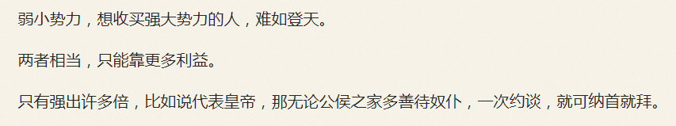

“老流氓上电视了，错了，不是电视是网络视频”，柴禾妞提醒郭春海，“自称住院隔离人员溜出来散步，顺便喷老老实实呆在家里的都是‘苕货’”。
“就说嘛，物尽其用人尽其才，一块抹布一张卫生纸都有它的用途”，郭春海评论，“这下真被逮进去了，筛查密切接触者还得把楼下那小子连累上”。
“组织怎么想的？老流氓怎么想的？”柴禾妞不明白，“养儿防老的道理都不懂，还拼了命往死里折腾”。
“你觉得当前的经济形势下，养谁能防老？”郭春海提醒，“当年计划生育的时候，口号是‘只生一个好，政府来养老’，后来是‘自己父母自己养，不推政府不推党’，现在是‘推迟退休好，自己来养老’”。
“这是已经有党和政府拍胸脯担保养老了？”柴禾妞恍然大悟，“怪不得老流氓没有后顾之忧，全心全意为组织服务”。
“是啊”，郭春海很惊讶，“你没看吟游诗人放话⑤么？组织发展间谍特务卧底的时候，只要找到目标周边人士一约谈，管你什么至亲至爱，立马拍胸脯保证坚决完成组织交代的革命任务”。
“人的仇敌就是自己家里的人”，柴禾妞打开报表，“你交代的工作已经完成了，根据大数据调查统计上的相关性，目标在工作和睡眠时接到的垃圾电话当中，来自歹人和家人的比例各占一半，家人骚扰的精确度还更高一些”。
“就保持这样的比例不变，过犹不及”，郭春海评论，“现在你应该明白了，组织根本就不需要目标做出什么建设性贡献，正如老流氓压根就没指望靠目标养老一样，只不过工作岗位和家庭成员必须瞒着目标而已，这就要靠演技了”。
“那到底谁负责养老呢？”柴禾妞想不明白，“我也听说过养老金缺口极大，总得有人负责填窟窿吧？”
“先娱乐再致死，给你讲个苏联政治笑话”，郭春海活跃气氛，“关于共产主义社会是否存在货币，南斯拉夫的修正主义者说会有，中国的教条主义者说没有，我们是辩证地看待这个问题：有，但不是所有人都有”。
“确实好笑”，柴禾妞娱乐完毕之后问，“那花旗国那边是什么情况？”
“花旗国的养老金都在股市里面，其它资本主义国家也类似”，郭春海普及经济常识，“那些金融市场，与兲朝这边诈骗傻哔专用的赌场韭菜地截然不同”。
“两条路线的斗争嘛”，柴禾妞若有所思，“好像不是以国家民族为单位划分阵营的，同文同种的同胞内部就成立了两个革命委员会，不是一个也不是三个，互相打得头破血流”。
“又不是从现在开始的，也不是从境外进口的，太阳底下没有新鲜事”，郭春海一边说一边上网搜索，打开国学经典页面①，指挥柴禾妞上网课，“色目人推崇的新石器时代中东特色社会主义，生产资料共同占有，生产者共同劳动，按性别、年龄实行自然分工。社会全体成员之间是平等的互助合作关系，产品归社会全体成员共同占有，实行平均分配。那是一个没有剥削，没有阶级，没有国家，一切重大问题都由全体成员参加的氏族会议作出决定的乌托邦”。
“咦？关色目人什么事？”柴禾妞看着教材，听着讲解，感觉对不上号，“你这是指桑骂槐？”
“只不过是有历史渊源的命名而已，这套话语体系在境内比较流行”，郭春海解释，“而本土化的措辞就是你看到的这些，比如‘大道之行，天下为公’什么的，当年鲜卑人看了之后如获至宝，悍然决定全盘汉化，公元398年7月23日代国全套领导班子迁移至云州，并召开丐帮第一次全国代表大会，是谓大同”。
“科学技术是第一生产力，随着金属工具的广泛使用，劳动生产率有了较大提高，除了维持生活必需之外，还出现了剩余产品”，柴禾妞看见郭春海示意自己举一反三触类旁通，就开始尝试着西学东渐洋为中用，“曾经负责保管和分配产品的人，逐步摆脱了繁重的体力劳动，专心钻研阴谋诡计，并以剩余产品为诱饵招揽亡命之徒担任领导干部，以没收身份证件之类方式限制人身自由，压迫其他人零零七不懈奋斗。如果首席执行官做不到维持元老院铁桶江山万万年，罗马人民就会以其于工作时间在工作场所掏出大屌塞入女实习生深喉并提起裤子不认账为理由进行弹劾。是谓小康”。
“很好，看来你已经明白两党的本质了”，郭春海称赞，“这一套在西方的渊源，人民群众最熟悉的就是斯巴达和雅典之间的路线斗争”。
“听你说过斯巴达的政治规矩和组织纪律，最近流行的新鲜名词是‘社会化抚养’什么的，就是把孩子集中起来并饥寒交迫，以选拔擅长抢劫偷窃诈骗的党国栋梁童年才俊，说穿了就是养蛊”，柴禾妞问，“全民皆兵倒是武德充沛了，那谁去种地呢？”
“当然是希洛人吖，甭管本来是什么人，被注入了武德之后就变农奴了，并且分为城邦全民所有制和农场集体所有制两种形式”，郭春海解释，“对外战争的时候，斯巴达人就驱使这批农奴打头阵攻城，平时就派遣城邦子弟兵上山下乡‘狩猎’农奴作为军事训练②，是为计划灭绝的基本国策”。
“想起来了，在公有制之下，虽然不能买卖农奴，但是斯巴达基因可以随意侮辱伤害农奴，并受到主席台前三排的鼓励”，柴禾妞最近看了许多色目情报掮客得意洋洋肆无忌惮的炫耀，并在郭春海的指导下深入剖析其中蕴涵的充沛政治和意识形态内容，“最高指示说了，红卫兵可以打砸抢抄抓，不想露面就戴口罩，不想暴露体格特征就隔着网线炮制各种素材嘲笑人民群众”。
“现在你能猜到在百善の新石器时代中国特色社会主义大好形势下于繁荣的中文互联网上各个识大体顾大局懂政治讲规矩守纪律的宣传阵地当中哗哗贴图发段子的那些对影视动漫游戏了如指掌的色目文艺爱好者兼《动物世界》粉丝属于哪个阵营了吧？”郭春海提醒，“当然在武德充沛的红色基因自己看来，这些青年色目混混鸡鸣狗盗之徒都是能征善战的精兵强将，越是残忍狡诈卑鄙无耻，就越是前途远大”。
“好像不对吧？”柴禾妞质疑，“按你讲话，娱乐至死の色目逗哔都是自由民主进步党外围成员，似乎与伟大光荣正确党不沾边”。
“就说色目人，在以色列境内就极端右倾保守，刚全票修宪要把以色列变成色目人的民族国家……唔，国际一流和谐宜居之都高学历精英社交圈已经把话题删了”，郭春海没搜到当初经常在首页今日头条位置醒目应景推荐的话题，全网搜索也只剩一些边角料，“但是在其它国家和地区，色目人就极端左倾自由了也，把脸一抹显出本相，纷纷表示一定要大搞特搞多元文化混合发酵，与此同时还要严厉打击和残酷镇压反色目主义者，包括但不限于基督徒和傻哔绿人，不，马瓦力”。
“我明白了，色目人在说韭菜话的时候，专挑人民群众喜闻乐见的话题，以便为第三圣殿的钦定大目标打掩护”，柴禾妞听懂了，“这种时候讲一口流利韭菜话混进韭菜堆里到处拉家常套近乎做和蔼可亲大善人状的色目情报掮客，肯定没安好心”。
“再看游戏，尤其是奇幻背景的那些，对应只带着短剑和必需品的最谨慎的青年战士”，郭春海提问，“最接近的职业是什么？”
“盗贼”，柴禾妞回答。
“那么本职工作不是偷东西，而是专挑费拉不堪的希洛人屠杀”，郭春海提问，“这种职业是什么？”
“刺客”，柴禾妞回答。
“就是这样，刺客现实存在，并且在历史上成为一股单独的政治势力”，郭春海曰若稽古，“你看词源也知道，就是号称‘山中老人’的波斯政治家、军事家、革命家阿萨辛同志，自诩始终代表了伊斯兰正统在雅利安、始终代表了色目文化的前进方向、始终代表了最广大色目人的根本利益”。
“所以从那时开始极端组织恐怖袭击就在三洲通衢遍地开花，你有初一我有十五，石叶派摸得逊尼派摸不得？”柴禾妞顺口搭话，“听你说以色列立国之初人丁稀少，也玩过这一套，在周边各个绿国当中专挑大杂居小聚居的社区杀人放火，逼得那些处于绿人包围当中的同胞无立锥之地，只好移民以色列当打工仔呢”。
“不仅西洋，东洋也一样”，郭春海继续提问，“身兼盗贼和刺客两种职业，在扶桑特色武德充沛影视动漫游戏当中，是什么？”
“忍者”，柴禾妞回答，“撇去主角光环听其言观其行，简直就是撒石灰套麻袋打闷棍，不，直接背后捅刀子的下三滥江湖好汉草莽豪杰”。
“最近扶桑人开始甩锅了，准备把自己撇干净”，郭春海提醒，“忍者这种货色的形象，已经悄悄转移给哥布林了，并且把下三滥从职业修养改成种族天赋”。
“我看也是”，柴禾妞同意，“在最新登场的一票划时代大作当中，忍者简直就是正规军当中有编制有军衔的侦察兵，不再是立足本乡本土倚仗熟悉地形隐藏幕后为乡贤干湿活的狗腿子了”。
“我离开幽州之前的最后一次任务，就是指使家贼给目标送了一口黑锅”，郭春海说，“不是比喻，就是黑色的锅，叮嘱目标一定要用来涮羊肉……也是比喻，组织想尽办法都抓不到壮丁，决定撤退之前干一票大的，运用人脉炮制唯物主义证据让丫背黑锅了”。
“为啥一定要涮羊肉？”柴禾妞不明白，“最近组织提供的食谱不是清蒸纱布包子么？”
“简单说，盎格鲁五眼联盟的那些红脖子农场主牧场主，就是中东内亚的那些已经定居的游盗部落酋长出身的牧场主，以及兲朝曾经的地主和中欧曾经的容克”，郭春海说，“所以才说两党的划分与宗教信仰无关，穷乡僻壤地广人稀都出刁民，被这些刁民所领导的，就是被户口本绑定在土地之上的农奴”。
“那城里呢？”柴禾妞问，“天下乌鸦一般黑，应该是被住房医疗教育这三座大山压在职位之上的工奴吧？”
“你猜对了，之前虽然‘非农业户口’没有成为障碍，但市民也是被人事档案和组织关系绑定在各种伪装成公有制企事业单位的世袭采邑当中，与轮流担任领导的几个红色基因家族之间存在着事实上的人身依附关系”，郭春海说，“顺便，现在还多了一座大山：养老”。
“人身依附关系”，柴禾妞重复了一遍，“虽然字眼高端大气上档次，但是听上去就不是什么好事”。
“所以说，无论勒令人民群众念诵红皮书、绿皮书、塔纳赫、福音书还是四书五经，都没什么区别”，郭春海解释，“那里面的内容，有干货有私货有灌水。但是神棍放话一字不得更改，说字里行间都充沛着微言大义。自打盘古开天地三皇五帝到于今，历朝历代都钦定了其伟大光荣正确性，必须天天读、月月读、年年读，常读常新”。
“虽然我都不怎么熟悉，但是上学的时候还是红皮书灌得多”，柴禾妞惦记着理论联系实际，“用红皮书举例说明吧”。
“境内锤镰帮还好，已经火并到表面上统一了。境外锤镰帮就多如牛毛，必须通过后面带着的括号加以区别，比方说尼泊尔这弹丸之地就有三十多个锤镰帮，遥尊大救星的就有五个”，郭春海举例，“你可以类比基督徒内部的派别，以及正在三洲通衢互相撕哔的傻哔绿人。任何一种宗教都会不停分裂，直到教派数量等于教徒数量为止，甚至个别教徒精神分裂的时候还会同时开创多个新兴宗教左右互搏呢”。
“还是太空泛了”，柴禾妞抱怨，“我要听干货”。
“先有红皮书后有锤镰帮，你要牢牢记住这一点”，郭春海说着点开链接③，结合素材讲解，“色目革命导师圣卡尔圣腓特烈的正统地位，迄今为止没有锤镰帮公开表示反对，但实际上则不然”。
“这已经是简化过了吧？很多大名如雷贯耳的革命导师都没出现”，柴禾妞看着“简明红教谱系”那张图，“记得上次看过基督教和绿教的谱系图，简直是一团乱麻”。
“因为红教历史还短，再过几百年你再看”，郭春海继续讲解，“正统的红教理论认为，迄今为止的社会形态只有两种，前资本主义时期和资本主义时期，加以区分的标志，就是是否存在‘人身依附关系’，韭菜只能随波逐流的根本原因到底是‘人’的依赖还是‘钱’的依赖”。
“政治学到初一的时候老师不是这么讲的”，柴禾妞回忆学生时代，“说啥资本主义出现之前就有原始社会奴隶社会封建社会三个阶段，一个比一个进步，讽刺历史上若干败犬企图三步并作一步走跑步进入啥主义，结果步子大了扯到蛋”。
“那是罗刹革命导师圣列宁圣斯大林开创的异端，五阶段线性进化论”，郭春海说，“并且从还从文科出发倒逼理科全面深化又红又专改革，包括但不限于‘生物进化从简单到复杂从低等到高等’以及苏联政治笑话”。
“就是哪儿来的野种那个？我听过”，柴禾妞回忆，“孩子生出来像自己，就是按照反动的摩尔根遗传学说炮制的黑五类，如果孩子长得像隔壁老王，那才是革命的李森科主义指导下按照环境决定性状理论培育的根红苗正の共产主义接班人”。
“现在你知道‘社会化抚养’的本质了么？”郭春海甩包袱，“不就是畜牧业育种么，纳粹当年也干过吖，《人民观察家报》一脉相承，特约野生国师，首席指路明灯，专挑黄昏时段街头演讲呢”。
“批量制造革命螺丝钉，这是因为治下人口不够充沛么？”柴禾妞问，“也就是说，哪怕议会斗争呢，算下来票数不够”。
“你也知道，自打热兵器普及以来，北方游盗部落就开始热情好客能歌善舞了也”，郭春海讽刺，“之前那些让内地农业文明头疼的敌进我退敌退我追敌驻我扰敌疲我打之类经典战术，都已经玩不转了”。
“那它们怎么办？总不至于束手待毙吧？”柴禾妞仔细一琢磨，“不对，实用的热兵器不是兲朝本土研发的，当年本土甚至不能生产，内地能进口，边疆就能进口，这么看来局势还是五五开”。
“就是这样，城头变幻大王旗，尤其是国际一流和谐宜居之都”，郭春海曰若稽古，“比方说瞅准机会以‘武力调停’借口破关夺隘攻城拔寨，然后把全套领导班子搬到幽州的著名败家子，你也应该从色目文艺当中对局势略知一二”。
“鲜卑武德就是这么混进幽州的，当年‘宁要城里一张床，不要乡下一套房’的生活水平差距，我大概能理解”，柴禾妞说，“乡贤也差不多，不可能把所有奴才都塞进城，也就带着启动资金安插亲信跟班开办产业经营驻京办事处而已，实力不够的甚至只能少爷小姐送去城里定居自己留在乡下定期打款”。
“农业人口越多，伟大光荣正确党的势力就越庞大，哪怕自由民主进步党一时胜利，也会被翻盘”，郭春海评价，“比方说波斯，无论圣上如何开明，只要企图从上到下改革开放，就会被乡间阿訇毛拉领导的傻哔绿人以农村包围城市武装夺取政权了”。
“反过来非农业人口越多，自由民主进步党的势力就越庞大”，柴禾妞举一反三触类旁通，“不对，城里贫民窟当中的包身工，肯定仇富心理强烈，只要革命导师把它们组织起来，照样可以在城里扩展票仓，以弥补农业人口转型升级的损失”。
“组织方式不止一种，宣传阶级斗争是见得光的一种，煽动行走江湖快意恩仇是见不得光的一种”，郭春海纠正，“你没听过民谣么？此处不留爷自有留爷处，处处不留爷爷去当八路”。
“这是把豢养忍者压迫希洛人的那一套照搬到城里了”，柴禾妞若有所悟，“听你说在幽州的时候就专挑目标所在的社区杀人放火抢劫强奸，再找三洲通衢极端组织发言人认领，然后就可以运用人脉缠着目标狂喷‘幽州不是你的家’，于是无立锥之地的目标就被抓壮丁了”。
“落后就要挨打，不可能通过开倒车的方式维持反动腐朽统治”，郭春海解释，“一旦与时俱进就停不下来，农业人口持续削减的趋势不可逆转，就说花旗国，只有百分之三”。
“上次你讲过”，柴禾妞打开链接④复习，“正如吟游诗人放话‘哥布林虽然愚昧但并不笨’一样，乡贤虽然反动，但并不愚蠢，凡是有利于维持腐朽统治的办法，都会千方百计加以实践”。
“历史洪流浩浩汤汤，顺之者昌逆之者亡”，郭春海念了两句诗，“甭看乡贤嘴上说什么废话，现实上都在实践产业脱实向虚，逐步从领地贵族转型成金融贵族，乡下只是基本盘根据地，城里的各种产业才是外围的炮灰，其中佼佼者则当抹布利用”。
“就不怕进城之后被自由民主进步的糖衣炮弹腐蚀吗？”柴禾妞问，“就算还保持着憨厚淳朴的乡间本色，互相串联起来大忆昔日之苦大思今日之恨，在条子眼皮底下忍者不好使了咋办？”
“鸡犬之声相闻，老死不相往来”，郭春海念了两句诗，“先放瘟疫，避免大规模聚集现象，再推荐移动网络等替代方案，在线办公、会议、教育都一样，就是不能让一盘散沙的费拉尼堪被什么粘合起来成为一个整体”。
“资本主义会碾碎曾经存在的所有生产关系”，柴禾妞背诵红色名言，“无论哪一个社会形态，在它所能容纳的全部生产力发挥出来以前，是决不会灭亡的；而新的更高的生产关系，在它的物质存在条件在旧社会的胎胞里成熟以前，是决不会出现的”。
“所以普列汉诺夫说罗刹革命属于早产，认定会造成灾难性的后果”，郭春海补充，“按照圣列宁以及托洛茨基的方针政策路线计划，罗刹就是个培养皿而已。输出革命到西欧之后，苏维埃中央就搬到德意志民族神圣罗马帝国去了也。罗刹的定位就是个被挤干的橘子一样的药渣，只负责提供农牧产品”。
“难怪乡贤不干”，柴禾妞同意，“听你说圣斯大林本来是高加索黑道大佬，有车臣周边充沛的武德撑腰，所以被乡贤当作代表推出来把持江山坐龙庭”。
“是啊，虽然罗刹瘦了一圈吧，但基本操作还是一样”，郭春海毫不惊讶，“你以为车臣大统领卡德罗夫为啥会纳头便拜，认罗刹大统领普京当干爹？”
“二十年前还打得头破血流呢，只要莫斯科中央不是自己人，梁山好汉就造反，否则就受招安”，柴禾妞奇怪，“这到底是谁把谁策反了？”
“你看吟游诗人放话⑤，弱小势力策反强大势力员工难如登天”，郭春海总是用吟游诗人当幌子，“所以说当初市面上炒作花旗国大手情报机构中层干部金无怠是被周恩来策反的，没准实际情况完全相反呢”。
“你是说反而是金无怠策反了周恩来？”柴禾妞听到这惊世骇俗的结论，不敢相信，“难道几十年来兲朝事无巨细一把抓，食少事烦其能久乎，就是源源不断的给花旗国提供充沛的情报？”
“不一定是花旗国，还有可能是苏修老大哥，甚至北棒老伙计”，郭春海不惮以最大的恶意揣测，“这位金先生，没准本姓爱新觉罗呢，货真价实的后清亲王。按照吟游诗人放话⑤，只要代表皇帝，哪怕已经退位但还是满头大汗，对民族权力机构和民族武装力量还有发言权，一次约谈包衣，昆仑奴就纳头便拜”。
“那后来为啥又暴露了呢？”柴禾妞对于多面间谍的相关知识储备不够充沛，“到底是谁卖的？”
“应该是因为苏修老大哥那边戈尔巴乔夫已经全票冻蒜了，并且作为众望所归人民领袖已经地位稳固，按照剧本崩溃不可避免，所以这块抹布已经没用了，等到改朝换代之后愤怒的人民群众冲击大手情报机构，就像东德那样，没准反而会泄漏更多国家机密兼宇宙奥秘”，郭春海大胆假设小心求证，“所以提前清理门户，把一切隐患扼杀在萌芽阶段”。
“然后倒打一耙贼喊捉贼，反过来把黑锅扣到无关的双方头上？”柴禾妞问，“也不能说是无关，只能说关系不大，于是罗刹和北棒就把自己撇清了？”
“根据捕风捉影道听途说获得的情报”，郭春海没把话说死，“当时鲜卑武德的代表，应该是薄一波吧，派人给俞强声送了一口黑锅，千叮咛万嘱咐一定要用来涮羊肉，俞强声只问了一句‘原来不是蒸鹅或空盒子吖’就卷款跑路拍屁股走人了也”。
- ① 《礼记·礼运》
- ② “长官们时常派遣大批最谨慎的青年战士下乡，他们只带着短剑和一些必需品。在白天，他们分散隐蔽在偏僻的地方，杀死他们所能捉到的每一个希洛人。有时，他们也来到希洛人正在劳动的田地里，杀死其中最强壮最优秀者”。
- ③ 《知乎问答№111：2018 年 3 月 Facebook 股价因数据滥用持续下跌，产生了哪些影响？》
- ④ 《知乎问答№145：如何评价“美国历任总统打分：林肯第一名特朗普垫底”？以及如何看待民主党总统整体评价远胜共和党总统？》
- ⑤